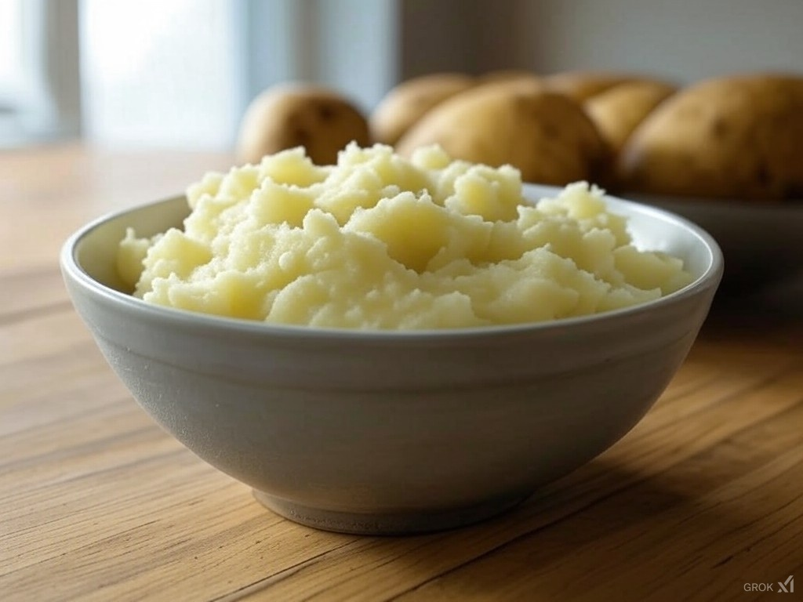

Mashed Potatoes

Description
These rich and creamy mashed potatoes are a staple with my family.
They are easy to make and are a great accompanyment to almost every protein.
This recipe, much like most of my other dishes, doesn't followed
set amounts, but is instead subject to taste. With that being said,
I usually make my batches with a 5 lbs bag of russet potatoes.
Ingredients
- Russet Potatoes
- Chicken Broth
- Butter
- Sour Cream
- Mayonnaise
- Salt
- Milk
Steps
- Peel the potatoes to remove the skin
- Rinse the peeled potatoes
- Chop the potatoes into roughly 1 inch cubes
- Place the potatoes in a large cooking pot and cover with chicken broth
- Bring the potatoes to a boil and cook until fork tender
- Drain the potatoes and return them to the pot with a stick of butter
- Add equal parts sour cream and mayo, a cup each to start
- Mash with a potato masher or hand mixer on low
- Add salt and additional mayo and sour cream to taste
- If the potatoes are too thick then thin them with a splash of milk
- Enjoy!
Home